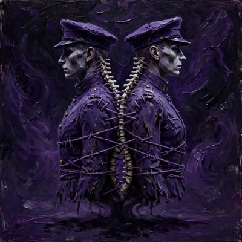
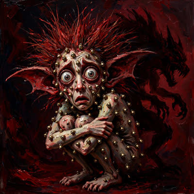
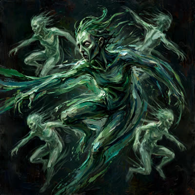

Sesuatu bergerak dari barat laut. Paris menahan napas — 550 ribu orang turun ke jalan, dan bau asap sekolah yang terbakar menyeberangi dua negara sebelum beritanya tiba. Kota-kota lain mulai mendengarkan. Italia sudah menjawab. WNI yang di sana: kota sedang tidak ramah malam ini. Dengarkan dia sebelum dia berteriak.

Demo di Eropa Meluas, Kemlu Belum Keluarkan Travel Warning
Kemlu belum mengeluarkan travel warning untuk Eropa di tengah meluasnya demonstrasi; WNI diimbau memantau situasi dan menyesuaikan rencana perjalanan. Tidak ada WNI yang menjadi korban.
nasional.kompas.com


